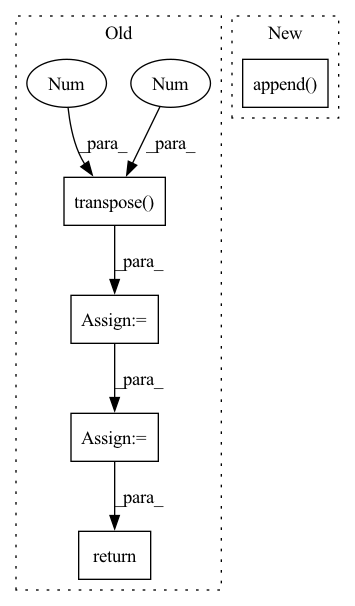

Pattern ID :29508
Before Change
image = cv2.cvtColor(image, cv2.COLOR_RGB2BGR)
image = torch.from_numpy((image / 255).transpose(2 , 0 , 1) ).unsqueeze(0).float()
if prev_mask is None:
mask = torch.zeros_like(image[:, :1, :, :])
else:
logger.info("InteractiveSeg run with prev_mask")
mask = torch.from_numpy(prev_mask / 255).unsqueeze(0).unsqueeze(0).float()
pred_probs = self.predictor(image, clicks, mask)
pred_mask = pred_probs > 0.5
pred_mask = (pred_mask * 255).astype(np.uint8)
// Find largest contour
// pred_mask = only_keep_largest_contour(pred_mask)
// To simplify frontend process, add mask brush color here
fg = pred_mask == 255
bg = pred_mask != 255
pred_mask = cv2.cvtColor(pred_mask, cv2.COLOR_GRAY2BGRA)
// frontend brush color "ffcc00bb"
pred_mask[bg] = 0
pred_mask[fg] = [255, 203, 0, int(255 * 0.73)]
pred_mask = cv2.cvtColor(pred_mask, cv2.COLOR_BGRA2RGBA)
return pred_mask
After Change
x = click[0]
y = click[1]
input_point.append([x, y])
input_label.append( click[2])
if img_md5 and img_md5 != self.prev_img_md5:
self.prev_img_md5 = img_md5
self.predictor.set_image(rgb_np_img)In pattern: SUPERPATTERN
Frequency: 3
Non-data size: 5
Instances Fragment ID: 87517239
Project Name: sanster/lama-cleaner
Commit Name: a6aec566d963e67c17c0871dca1c89d26e1cdcaa
Time: 2023-04-06
Author: cwq1913@gmail.com
File Name: lama_cleaner/plugins/interactive_seg.py
M Class Name: InteractiveSeg
N Class Name: InteractiveSeg
M Method Name: forward(4)
N Method Name: forward(4)
M Parent Class: BasePlugin
N Parent Class: BasePlugin
M File Name: lama_cleaner/plugins/interactive_seg.py
N File Name: lama_cleaner/plugins/interactive_seg.py
M Start Line: 242
M End Line: 264
N Start Line: 48
N End Line: 75
Before Change
img = letterbox(img, new_shape=imgsz)[0]
//print(img.shape[:2])
img = img.transpose(2 , 0, 1 )
img = torch.from_numpy(img).to(self.device)
img = img.float() // uint8 to fp16/32
img /= 255.0 // 0 - 255 to 0.0 - 1.0
if img.ndimension() == 3:
img = img.unsqueeze(0)
return img
def _postprocess(self, img, origimg, pred, conf_thres, iou_thres, height, width):
After Change
imgsz = check_img_size(max(img.shape[:2]), s=self.detector.stride.max()) // check img_size
img = letterbox(img, new_shape=imgsz)[0]
pp_imgs.append( img)
pp_imgs = np.array(pp_imgs)
pp_imgs = pp_imgs.transpose(0, 3, 1, 2)
pp_imgs = torch.from_numpy(pp_imgs).to(self.device)
pp_imgs = pp_imgs.float() // uint8 to fp16/32 Fragment ID: 87517335
Project Name: elyha7/yoloface
Commit Name: 794e25df420f25fd7937e0af41fefd7bf184fad6
Time: 2022-01-10
Author: artemrebrikov@gmail.com
File Name: face_detector.py
M Class Name: YoloDetector
N Class Name: YoloDetector
M Method Name: _preprocess(2)
N Method Name: _preprocess(2)
M Parent Class:
N Parent Class:
M File Name: face_detector.py
N File Name: face_detector.py
M Start Line: 67
M End Line: 83
N Start Line: 66
N End Line: 82
Before Change
preds.append(self.Linear(h))
preds = torch.stack(preds, dim = 1)
if y is not None:
preds_ = torch.transpose( preds, 1 , 2 )
//print(preds.size())
y = y.long()
loss = self.Loss(preds_, torch.squeeze(y))
return preds, loss
return preds
After Change
hs, cs = self.rim_model(row_index, ind, k, hs, cs)
preds = self.Linear(hs.contiguous().view(x.size(0), -1))
preds_.append( preds)
if y is not None:
loss+=self.Loss(preds, y[:,i].squeeze().long())
preds_ = torch.stack(preds_, dim = 1)
if y is not None: Fragment ID: 87517226
Project Name: dido1998/recurrent-independent-mechanisms
Commit Name: d87a800096eaa36730cbabac535eea24973f3799
Time: 2020-02-11
Author: adidolkar123@gmail.com
File Name: networks.py
M Class Name: CopyingModel
N Class Name: CopyingModel
M Method Name: forward(5)
N Method Name: forward(5)
M Parent Class: nn.Module
N Parent Class: nn.Module
M File Name: networks.py
N File Name: networks.py
M Start Line: 255
M End Line: 276
N Start Line: 291
N End Line: 313